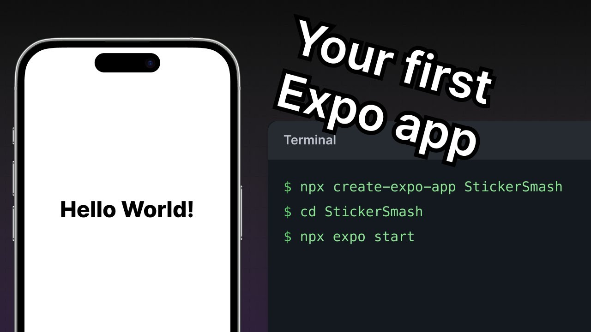

Instalasi React Native
1 Persiapan Software (Wajib)
Sebelum mulai, kamu harus menginstal dua "senjata" utama:
-
Node.js (LTS Version): React Native butuh Node.js
untuk berjalan. Download versi LTS (Long Term Support) di
nodejs.org.
Setelah install, cek di terminal dengan
node -v. - Code Editor: Sangat disarankan pakai Visual Studio Code (VS Code).
- Git (Opsional tapi Penting): Download di git-scm.com.
2 Membuat Project Baru
Kita tidak perlu menginstal aplikasi React Native secara global.
Kita akan menggunakan perintah npx (bawaan Node.js)
untuk membuat project.
Buka terminal (Command Prompt atau Terminal), arahkan ke folder tujuan, lalu ketik:
npx create-expo-app StickerSmashTunggu proses download selesai sampai muncul tulisan "Your project is ready!".
3 Menjalankan Server Development
Masuk ke folder project yang baru dibuat:
cd StickerSmashJalankan servernya dengan perintah:
npx expo startTerminal akan menampilkan QR Code besar. Ini artinya server sudah jalan.
4 Menampilkan di HP (Paling Gampang)
Kamu tidak perlu emulator berat di laptop. Cukup pakai HP kamu sendiri (Android atau iPhone).
- Download Aplikasi: Cari dan install aplikasi bernama Expo Go di App Store atau Play Store.
- Koneksi: Pastikan HP dan Laptop kamu terhubung ke jaringan Wi-Fi yang sama.
-
Scan QR:
- Android: Buka Expo Go, pilih "Scan QR Code", lalu arahkan kamera ke QR Code di terminal.
- iPhone: Buka aplikasi Kamera biasa, scan QR code, lalu klik notifikasi untuk membuka di Expo Go.
Tunggu sebentar (building JavaScript bundle), dan... BOOM! Aplikasi akan muncul di layar HP kamu.
5 Coding "Hello World"
Sekarang saatnya mengubah tampilan aplikasi menjadi "Hello World". Buka project HelloWorld tadi menggunakan VS Code.
Cari file bernama App.js (atau
app/index.tsx). Hapus atau edit bagian
<Text>:
import { StatusBar } from 'expo-status-bar';
import { StyleSheet, Text, View } from 'react-native';
export default function App() {
return (
{/* Ubah teks di bawah ini */}
Hello World! Ini aplikasi pertamaku.
);
}
const styles = StyleSheet.create({
container: {
flex: 1,
backgroundColor: '#fff',
alignItems: 'center',
justifyContent: 'center',
},
});Tekan Save (Ctrl+S atau Cmd+S). Lihat HP kamu. Tampilannya akan berubah secara otomatis (Fast Refresh) tanpa perlu install ulang.
